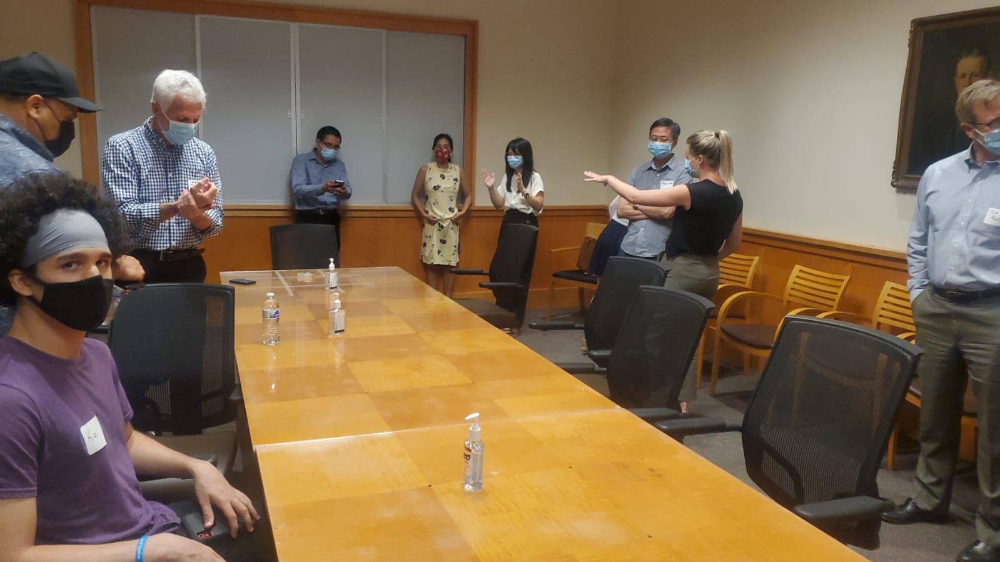

Fall 2021
Engineering Diplomats
Going into Engineering Diplomats I was interested how international students were treated and understood America before coming here. About to go into the international co-op program I would be in their shoes soon!
Upon initially meeting the international students I was suprised that we only had 4 when 16 were originally expected to come. As it turns out a lot of them decided not to come due to the COVID pandemic. Which is understandable given the state of the world at the time. But this soon became a problem because we only had 4 international students and about 12 mentors! Regardless learning about each student and why they decided to come to America was very interesting.
While learning about the international students it was easy for me to relate to them because of the same passion for culture we had, only it was reverse. The international students I talked to were mostly interested in American culture, food, and English. Whereas if I were to go into ICP I would be interested in the same thing. It was also interesting to learn that most of the mentees were in their last year and college and had vast knowledge on things I've never touched such as Machine Learning! They could very realistically mentor me on those subjects, while in this program I'm meant to be the mentor!
For the majority of the summer we communicated through Groupme to answer any questions they had about UC or American culture. We eventually took them out to a good old fashion American BBQ to introduce them to our food. They wanted to and struggled getting a job on campus because of the restrictions placed on international students, but we were able to help them around the most diplomatic aspects. Although I didn't get to spend a lot of time with the international students because of the mentor to mentee ratio I still enjoyed learning bout them and teaching them American culture.
This picture was taken during the first meeting while we were waiting for the mentees to arrive!